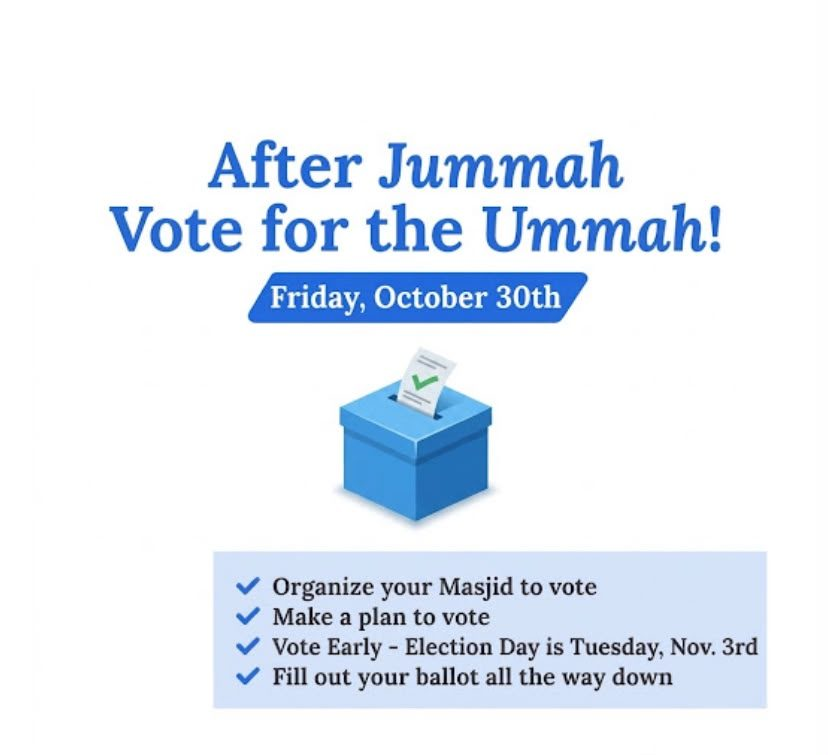

After Jummah, Vote for the Ummah!
- When
- Friday, October 30 · after Jumu'ahVote early at your local polling place · Election Day is Tuesday, November 3
64 years ago the African American community established a tradition called “Souls to the Polls”. This was where the Sunday before elections, black church goers would unite and go in buses🚌 , carpools 🚗 , etc. to the polls 🗳️ and vote together. This helped establish the African American community as a powerful voting block, by taking advantage of the Sunday congregation to help increase voter turnout.
Muslim Americans can learn from this initiative and follow in the footsteps of our fellow Americans by establishing a tradition of our own.
We call upon Muslims across the country to organize with their local masjids 🕌 the Friday before the general election, Friday, October 30th and go with your friends, family, and neighbors to vote. Let this year be the first year we establish our political power! 🗳️
1. Organize your masjid to make arrangements to have everyone vote in your local precinct.
2. Give all voters a pro-peace Voter Guide which will guide them on how to vote.
3. Spread this message far and wide!
After Jummah,
Vote for the Ummah!